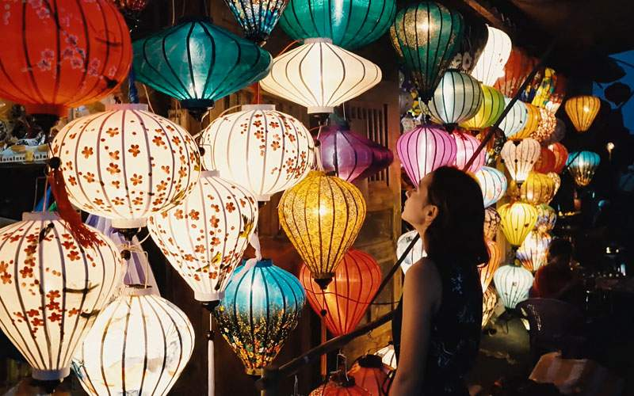
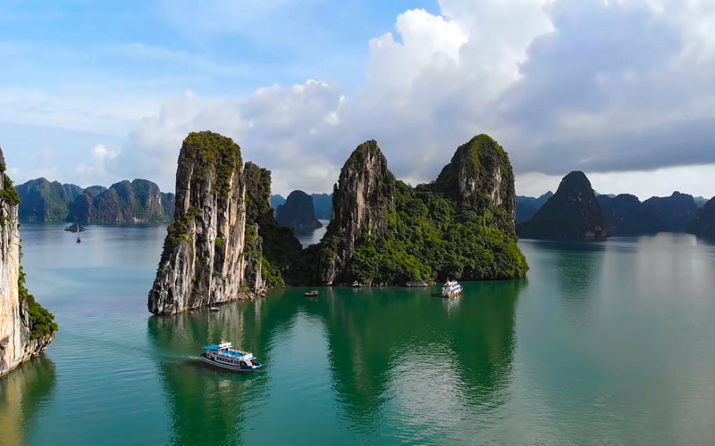

• Hoi An – Charmosa cidade litorânea
No passado, Hoi An era o porto comercial mais movimentado da região, e hoje tornou-se um dos destinos turísticos mais famosos no centro do Vietnã. Com influência de europeus, chineses e japoneses, Hoi An tem todo um charme especial com sua diversidade cultural e mistura arquitetônica única. No dia 14 de cada mês do calendário lunar, os turistas têm a oportunidade de apreciar as lanternas artesanais coloridas na famosa Festa das Lanternas.
• Baía de Ha Long – Maravilha do Mundo
A baía de Ha Long é considerada Patrimônio Natural Mundial pela UNESCO a partir de 1994. São cerca de 2 mil formações de calcário e dolomita formando uma paisagem deslumbrante de pequenas ilhas com todos os tipos de formato. São oferecidos vários tipos de cruzeiros para quem quer ter uma experiência mágica e apreciar tudo que a baía oferece, com suas cavernas e praias. Há também visitas a cavernas com formação de carste, como a Caverna da Surpresa ou a gruta do Palácio Celestial. Os cruzeiros também oferecem diversas atividades como passeio de caiaque, parada para nadar, pesca noturna, além de refeições especiais e serviços de spa.